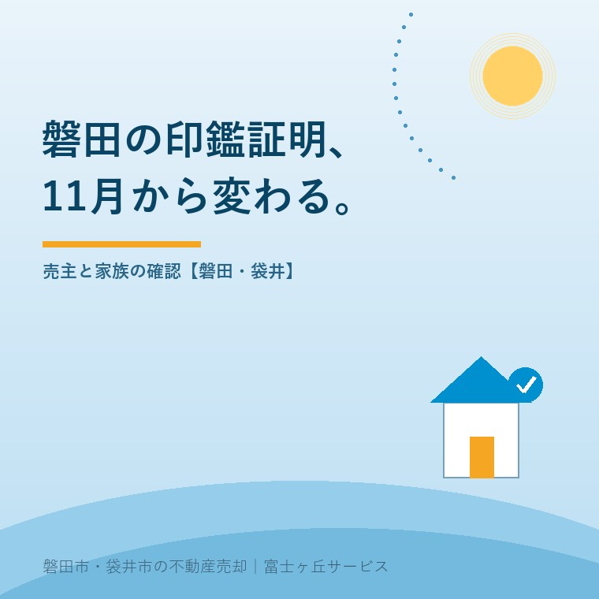
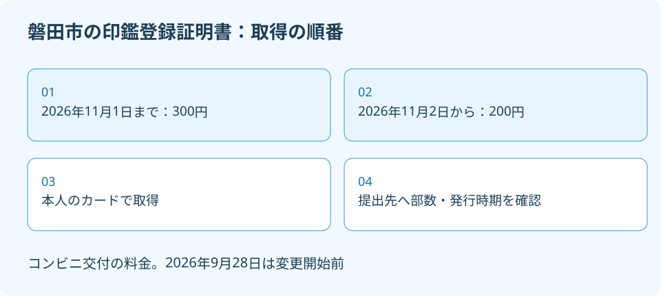

磐田市の印鑑証明、売却前の取り方と11月変更
2026年9月28日｜カテゴリ：地域・売却実務

この記事の要点
磐田市の印鑑証明はコンビニで取れる？11月まで待つ方がいい？
本人の利用条件を満たせばコンビニで取得できます。料金は2026年11月2日から1通300円が200円になりますが、売却の必要時期を先に確認します。磐田市では、介護施設の運営から不動産事業を始めた富士ヶ丘サービスのような会社と日程を整理し、登記書類の条件は司法書士に確認を。
大石浩之（磐田市／不動産業）です。実家の売却で印鑑証明を用意するとき、先に知りたいのは「仕事帰りに取れるか」「親の分を家族が取れるか」「何通必要か」でしょう。料金の変更だけを見て取得日を決めると、本人の利用条件や提出時期の確認が後回しになります。
磐田市は2026年11月2日から、証明書のコンビニ交付手数料を100円減額します。同じ日から市役所窓口の受付時間も変わります。2026年9月28日に市の公式案内を確認しました。減額も受付時間変更も、この記事の公開時点ではまだ始まっていません。
コンビニ交付は11月2日から1通200円
磐田市の印鑑登録証明書のコンビニ交付料金は、2026年9月28日時点で1通300円です。市の「証明書コンビ二交付サービス」には、2026年11月2日以降は200円と明記されています。対象は、磐田市で印鑑登録している本人の証明書です。
| 取得する時期 | コンビニ交付の料金 | 売主の確認 |
|---|---|---|
| 2026年11月1日まで | 1通300円 | 減額開始前の料金で準備する |
| 2026年11月2日から | 1通200円 | 提出日・発行時期の条件に合うかを確認する |
必要な部数が仮に2通なら、600円が400円となり、差は200円です。これは2通必要だという案内ではなく、同じ部数で比較した計算例です。市は窓口交付より100円安く取得できると説明しており、窓口料金まで一律200円になるという読み方はしません。
私は、料金を下げてコンビニ交付を使いやすくする点は良いと考えます。取得条件が合う売主なら、市役所へ行くための移動や勤務の調整を減らせます。特に平日の窓口へ行きにくい家族には、金額の差だけでなく、自分の予定に合わせて動ける意味があります。
その上で注文したいのは、便利な方法の紹介と、誰でも使えるという説明を混ぜないことです。カードや電子証明書の状態、本人の操作、印鑑登録の有無を確かめる必要があります。100円安く取るために、売却の必要書類を遅らせるのは本末転倒です。私は提出日を先に決めます。

親のカードを預かって代わりに取得しない
磐田市のコンビニ交付は、マイナンバーカード所有者本人が利用するサービスです。利用者証明用電子証明書が搭載されたカードと、その4桁の暗証番号が必要です。親のカードを子が預かれば同じように利用できる、という案内にはなっていません。
市の案内では、利用時間は毎日6時30分から23時までで、メンテナンス日を除きます。対応するマルチコピー機がある全国のコンビニ等で利用できます。磐田市の証明書だから磐田市内の店舗でしか取得できない、というわけではありません。ただし、利用条件は本人について確認します。
見落としたくないのは、カード交付や市外からの転入手続を完了した当日は利用できない点です。市は翌日以降の利用と案内しています。「今日カードを受け取って、その足で証明書も取る」という予定は組まず、必要日に間に合うかを事前に確かめます。
私は、施設にいる親の書類を家族が準備するなら、まず本人が利用できる方法から整理することを勧めます。子の都合でカードと暗証番号を預かり、コンビニで代わりに操作する案にはしません。本人が来庁できない場合の別の取得方法や必要書類は、市民課へ相談します。
証明書が取れることと、親の家を代理で売れることも別です。本人の意思や代理の権限を確認する作業は残ります。売却の準備を一つ進めるたびに、次の手続まで済んだと思い込まないことです。代理や登記の個別判断は、司法書士などの専門家に確認を。
11月2日から窓口受付は9時〜16時30分
磐田市の「市役所窓口の受付時間変更」は、2026年11月2日から受付を9時〜16時30分にすると案内しています。本庁舎、西庁舎、各支所などが対象です。電話の受付時間とは区別が必要で、職員の勤務時間や電話受付の8時30分〜17時15分は変更しないと説明しています。
木曜日の19時までの延長と、第2日曜日の9時〜正午の開庁は継続します。ただし、市民課・市民税課のみです。どの窓口も木曜日の夜に利用できると考えて予定を組まないでください。印鑑登録証明書以外の相談も同時に済ませたい場合は、それぞれの担当へ確認します。
| 2026年11月2日以降 | 案内されている時間 |
|---|---|
| 通常の窓口受付 | 9時〜16時30分 |
| 木曜の延長 | 19時まで。市民課・市民税課のみ |
| 第2日曜の開庁 | 9時〜正午。市民課・市民税課のみ |
| コンビニ交付 | 6時30分〜23時。メンテナンス日を除く |
私は、家族へ渡す予定表に「役所へ行く」とだけ書くのを避けたいと考えます。必要な書類、窓口、到着できる時間を一行にすると、受付終了後に着いてしまう無駄を減らせるからです。仕事を休むか迷う場合も、取得だけなのか、登録や相談も必要なのかで選ぶ時間が変わります。
市の窓口変更ページは2026年9月24日更新、コンビニ交付ページは8月31日更新です。更新日と開始日は別です。9月28日の時点で11月の受付時間を現在の時間として伝えないよう、家族に転送するメモにも「11月2日から」と添えてください。
必要部数と発行時期を決めてから取る
売却に使う印鑑登録証明書は、提出先が求める原本の通数、発行時期の条件、提出日を確認してから取得します。物件や手続内容を見ずに一律の必要部数を案内することはできません。担当司法書士と仲介会社の持ち物案内を照合してください。
私なら、確認メモに「誰の証明書か」「原本は何通か」「いつ発行したものが必要か」「誰へいつ渡すか」の4欄を作ります。家族が一緒に動く場合でも、本人ごとに行を分けます。売主が複数いるのに一人分の証明書だけそろった、という読み違いを防ぐためです。
私も、今すぐ取るか11月まで待つかを、手数料表だけでは決められません。決済日が先でも書類の事前確認が必要かもしれませんし、日程が延期になれば発行時期の条件を再確認する必要もあります。費用を節約するなら、必要以上に取らないことと取り直しを減らすことを先に考えます。
書類の種類も分けます。印鑑登録証明書は、不動産の登記事項証明書とは別です。登記事項証明書を取得しても、売主本人の印鑑登録証明書をそろえたことにはなりません。家の情報を示す書類と、人の印鑑の登録を示す書類を、同じ「証明書」でまとめないでください。
権利証が見つからない場合も、印鑑登録証明書を増やせば代わりになる話ではありません。権利証を紛失したときの確認を参考に、見当たらないことを早めに司法書士へ伝えます。必要な別の準備を含め、登記の個別判断は専門家に確認を。
磐田の売主は本人・書類・日程を一枚にする
磐田市で印鑑登録している売主は、本人の利用条件と提出条件を確認して、コンビニか窓口かを選びます。売る家が磐田市内でも、売主の住民登録や印鑑登録が他市にある場合まで、この料金と手順をそのまま当てはめないでください。
今日できることは、担当司法書士へ必要部数と発行時期を一度に聞くことです。その回答をもとに、本人が動ける日を決めます。決済当日の持ち物とお金の流れも確認し、証明書の取得日と決済日を別々に予定表へ書き込みます。
富士ヶ丘サービスでは、介護と不動産を一体で相談し、磐田・袋井の実家の売却準備を支援します。家族が困らない売却のため、誰が何を取得するかを具体的にします。私は、安く取れる方法を案内する前に、必要な書類が必要な日にそろう順番を確認します。
- 減額は2026年11月2日から。必要日を先に決める。
- コンビニ交付はカード所有者本人の利用条件を確認する。
- 窓口の時間と、証明書の必要部数・発行時期を照合する。
よくある質問
磐田市の証明書取得は、本人の利用条件と提出条件を先に確認します。
- 施設にいる親のカードを借りて、子が取得できますか？
- 磐田市は、コンビニ交付を利用できるのはマイナンバーカード所有者本人のみと案内しています。親のカードと暗証番号を預かって、子が本人の代わりに利用する方法は勧めません。親が窓口へ行けない場合は、市民課へ別の取得方法と必要書類を確認してください。売却の代理や本人の意思確認は、別途専門家に確認を。
- 2026年9月28日にコンビニで取ると、もう200円ですか？
- 2026年9月28日時点では、磐田市の印鑑登録証明書のコンビニ交付は1通300円です。200円になるのは2026年11月2日からで、開始前の減額を適用しません。窓口での交付も同じ200円になるとは扱わないでください。必要部数と提出日を先に確認し、100円の差だけで取得を遅らせないようにします。
- 売却に使う印鑑登録証明書は、何通取ればよいですか？
- 必要部数は、登記などの提出先と手続内容によって確認します。仲介会社からの一般的な持ち物案内だけで余分に取得せず、担当司法書士へ原本が必要な通数、発行時期の条件、提出日を聞いてください。決済が延期になったときも、手元の証明書を使えるか再確認します。個別の登記判断は専門家に確認を。

この記事を書いた人：大石浩之（磐田市／不動産業・宅地建物取引士）
富士ヶ丘サービス株式会社。介護施設の運営から不動産事業を始め、磐田市・袋井市・森町で、介護と相続、実家の売却を一体で相談できる窓口を設けています。家族が困らない売却のため、資料と現地の条件を一件ずつ整理します。著者プロフィール
本記事は2026年9月28日時点の公開情報と筆者の意見です。制度・数値・手続きは変更されることがあります。個別の税務・登記・相続・代理の判断は、税理士・司法書士・弁護士などの専門家に確認を。